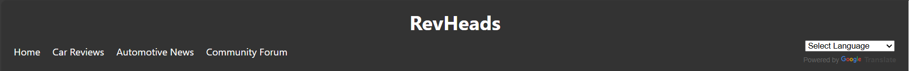
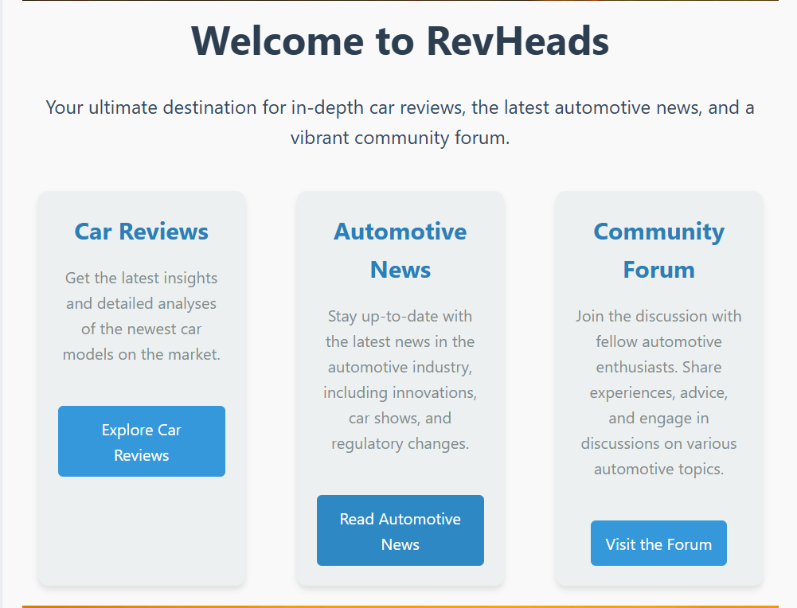
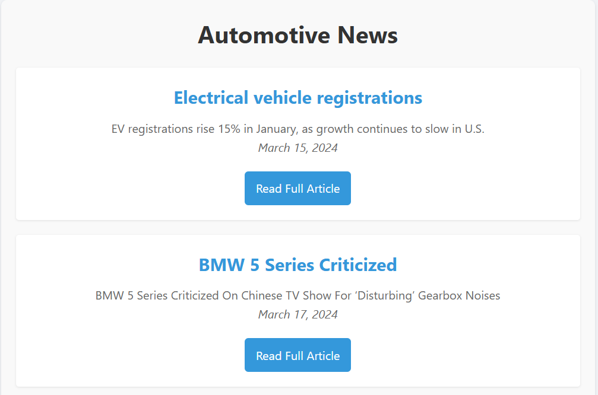
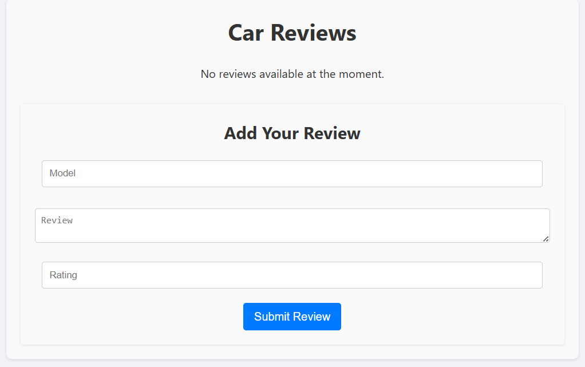
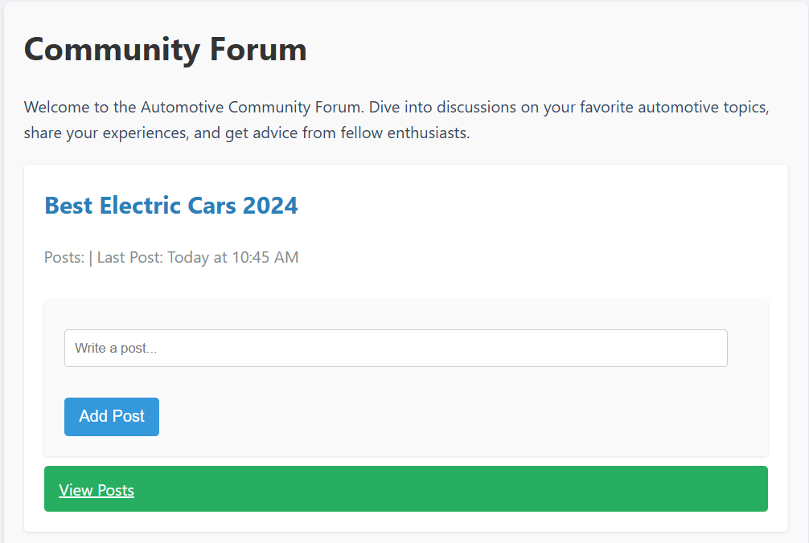

RevHeads Automotive Portal
RevHeads is an interactive web portal designed to provide users with comprehensive car reviews, the latest automotive news, and a vibrant community forum for automotive enthusiasts. The portal is structured into several sections, each catering to different aspects of the automotive experience.
Features
Home Page: The homepage welcomes users to RevHeads, highlighting the key sections of the portal: Car Reviews, Automotive News, and Community Forum. Easy navigation options to explore different sections of the site.
Automotive News: This section provides the latest news in the automotive industry, including innovations, regulatory changes, and market trends. Users can read brief summaries of news articles and click to read the full articles.
Car Reviews: Users can add their own car reviews by filling out a form with details about the car model, their review, and a rating. Initially, it shows a message indicating no reviews are available, encouraging user interaction.
Community Forum: Users can engage in discussions on various automotive topics. The forum allows users to share their experiences, ask for advice, and interact with other car enthusiasts. Users can write and add posts, view existing posts, and keep up-to-date with the latest discussions.
Technical Details: The project is built using HTML, CSS, and JavaScript. The user interface is designed to be clean, intuitive, and responsive. The project is organized into components for reusability and maintainability, with separate directories for images, styles, and JavaScript files.
Visual Design: The user interface features a modern and clean design with a focus on readability and ease of navigation. Key elements include prominent headers, interactive buttons, and well-organized content sections. A combination of bright and neutral colors is used to enhance visual appeal and ensure accessibility.
Screenshots:
    